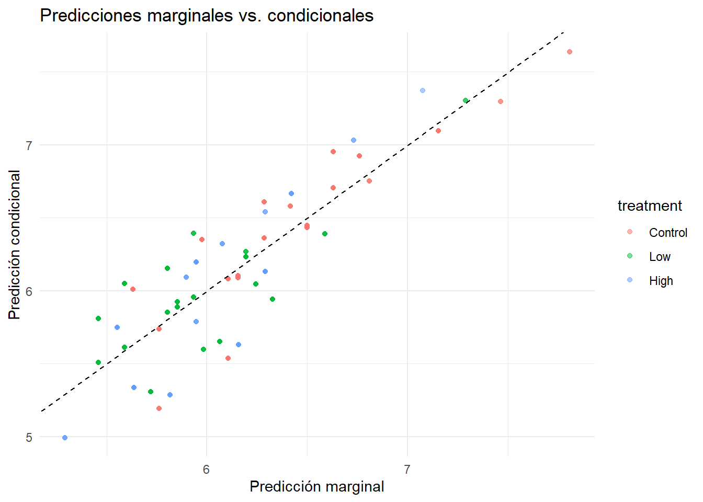

flowchart TD
A[30 ratas hembra] --> B[Tratamiento asignado a nivel de madre]
B --> C[Control\n10 camadas]
B --> D[Dosis Baja\n10 camadas]
B --> E[Dosis Alta\n7 camadas]
C --> F[322 crías - Level 1]
D --> F
E --> F
Modelo para datos en clusters de 2 niveles (Two-level clustered linear mixed model)
Ejemplo de las crías de rata 🐁💊- West et al., capítulo 3
0.1 🐁Problema de investigación
30 ratas hembra fueron asignadas aleatoriamente a tres grupos: dosis alta, dosis baja o control de un compuesto químico.
El tratamiento fue asignado a nivel de la madre, por lo que todas las crías de una misma camada comparten el mismo tratamiento.
Pregunta central: ¿Existen diferencias en el peso al nacer de las crías entre los grupos de tratamiento, considerando la dependencia entre crías de una misma camada y ajustando por sexo y tamaño de camada?
Note🖊
Lo que dice: Se hizo un experimento con 30 ratas hembra (las madres), que fueron asignadas al azar a tres grupos según la dosis de un compuesto químico que recibieron: alta, baja, o ninguna (control).
El punto importante que destaca es: el tratamiento se le da a la madre, no a las crías individualmente. Entonces todas las crías que nacen de una misma madre/camada reciben automáticamente el mismo tratamiento — porque fue la madre quien lo recibió, no ellas.
¿Por qué esto importa? Esto define la estructura jerárquica del estudio:
Nivel 2 (camada/madre) → recibe el tratamiento
└── Nivel 1 (crías) → se mide el pesoEs decir, el tratamiento es una variable de nivel 2 (de la camada), mientras que el peso al nacer se mide a nivel 1 (cada cría individual). Las crías “heredan” el tratamiento de su madre.
Esta es la pieza clave para entender por qué se necesita un modelo mixto: tienes datos anidados (crías dentro de camadas) y una variable que actúa a un nivel distinto (camada) del nivel donde mides el outcome (cría).
0.2 🐁Diseño del estudio
- Nivel 2 - camada: unidad de asignación del tratamiento
- Nivel 1 - cría: unidad de medición
- Diseño desbalanceado: tamaño de camada varía de 2 a 18 crías
Note🖊
30 ratas hembra → Tratamiento asignado a nivel de madre
├── Control (10 camadas)
├── Dosis Baja (10 camadas)
└── Dosis Alta (7 camadas)
↓
322 crías (Level 1)Esto representa el flujo de la asignación: primero se asignan las madres a un grupo de tratamiento, y de ahí “cuelgan” sus crías.
Nivel 2 — camada: La camada es la unidad de asignación del tratamiento. Es decir, el experimento “actúa” sobre la camada (porque la madre recibió el compuesto). Cada camada tiene un identificador (litter) y pertenece a un grupo de tratamiento.
Nivel 1 — cría: La cría es la unidad de medición. Cada cría tiene su propio peso (weight), su sexo, y pertenece a una camada específica.
Diseño desbalanceado: Esto es clave estadísticamente: el tamaño de las camadas varía de 2 a 18 crías. No todas las madres tuvieron el mismo número de hijos.
¿Por qué importa? Porque:
- Algunas camadas aportan mucha información (18 observaciones), otras poca (2)
- Un modelo mixto puede manejar esto naturalmente — cada camada contribuye en proporción a su tamaño
- Si usaras un análisis simple (como un ANOVA tradicional), tendrías problemas con este desbalance
El ejemplo Rat Pup tiene una estructura jerárquica de dos niveles. El tratamiento se asigna a nivel de la madre o camada, porque la madre recibe el compuesto durante la gestación. Luego, el peso se mide individualmente en cada cría.
En términos del modelo, la camada corresponde al nivel 2 y la cría corresponde al nivel 1. Esto significa que las crías de una misma camada no pueden considerarse completamente independientes entre sí: comparten la misma madre, el mismo ambiente intrauterino y el mismo grupo de tratamiento.
El diseño también es desbalanceado, porque no todas las camadas tienen el mismo número de crías. Algunas camadas aportan muchas observaciones y otras pocas. Un modelo mixto permite usar todas las observaciones disponibles, pero incorporando un efecto aleatorio para litter, de modo que la correlación entre crías de la misma camada sea considerada explícitamente.
Por eso, este ejemplo se analiza como un modelo lineal mixto de dos niveles: crías anidadas dentro de camadas, con un intercepto aleatorio para la camada.
0.3 🐁Variables
| Variable | Nivel | Tipo | Rol | Codificación |
|---|---|---|---|---|
weight |
1 | Continua | Outcome | Gramos |
sex |
1 | Categórica | Covariable | Male = referencia; Female = 1 |
pup_id |
1 | Identificador | Identificación | Una cría |
litter |
2 | Identificador | Agrupación aleatoria | Una madre/camada |
treatment |
2 | Categórica | Predictor principal | Control = referencia |
litsize |
2 | Cuantitativa | Covariable | Número de crías |
trtgrp |
2 | Categórica | Estructura residual | Control vs. High_Low |
| treatment | Camadas | Crias | Peso_medio | DE |
|---|---|---|---|---|
| Control | 10 | 131 | 6.32 | 0.74 |
| Low | 10 | 126 | 5.93 | 0.43 |
| High | 7 | 65 | 5.89 | 0.64 |
Note🖊
La tabla está bien pensada porque deja claro lo más importante del ejemplo Rat Pup: hay variables de nivel cría y variables de nivel camada/madre. Esta distinción justifica el uso de un modelo mixto.
Variables de nivel 1: cría
Estas variables cambian de una cría a otra dentro de la misma camada.
| Variable | Qué representa | Cómo se usa |
|---|---|---|
weight |
Peso de cada cría | Es el outcome continuo. El modelo busca explicar diferencias en peso. |
sex |
Sexo de la cría | Covariable individual. Male es la referencia y Female = 1. |
pup_id |
Identificador de la cría | Sirve para identificar observaciones, pero no es el efecto aleatorio principal. |
La idea clave es que, aunque cada cría tiene su propio peso, las crías de una misma camada se parecen entre sí. Por eso no se tratan como observaciones totalmente independientes.
Variables de nivel 2: camada / madre
Estas variables son iguales para todas las crías de una misma camada.
| Variable | Qué representa | Cómo se usa |
|---|---|---|
litter |
Identificador de la camada/madre | Es el factor de agrupación aleatoria. Se usa como (1 \| litter) o random = ~ 1 \| litter. |
treatment |
Grupo asignado a la madre | Predictor principal. El tratamiento ocurre a nivel de madre/camada, no de cría. |
litsize |
Tamaño de la camada | Covariable de nivel 2. Controla por el número de crías en la camada. |
trtgrp |
Agrupación Control vs. High_Low | No es predictor sustantivo principal; se usa para modelar varianza residual heterogénea. |
La parte más importante es que el tratamiento se asigna a nivel de madre/camada, pero el outcome se mide a nivel de cría. Por eso necesitamos distinguir entre variables de nivel 1 y variables de nivel 2.
Resumen por grupo de tratamiento
La tabla descriptiva por grupo de tratamiento también ayuda a entender el diseño:
| Grupo | Camadas | Crías | Peso medio |
|---|---|---|---|
| Control | 10 | 131 | 6.32 |
| Low | 10 | 126 | 5.93 |
| High | 7 | 65 | 5.89 |
Esta tabla muestra dos cosas. Primero, el diseño está desbalanceado: no hay el mismo número de camadas ni de crías en cada grupo. En particular, High tiene solo 7 camadas y 65 crías.
Segundo, el peso promedio parece menor en Low y High que en Control, pero esa comparación descriptiva todavía no basta, porque hay que considerar el sexo, el tamaño de camada y la correlación entre crías de la misma camada.
Las variables de nivel 1 describen características de cada cría, mientras que las variables de nivel 2 describen características compartidas por todas las crías de una misma camada. Esta estructura jerárquica justifica el uso de un modelo lineal mixto con intercepto aleatorio para litter.
El tratamiento se asigna a nivel de madre/camada, pero el outcome se mide a nivel de cría. Esta diferencia entre unidad de asignación y unidad de medición es una de las razones principales para usar un modelo mixto.
0.4 🐁Exploración descriptiva
0.4.1 Peso según tratamiento y sexo

Note🖊
La exploración descriptiva permite revisar la estructura de los datos antes de ajustar el modelo mixto. En el ejemplo Rat Pup, el outcome es weight, medido a nivel de cría, mientras que el predictor principal treatment se asigna a nivel de madre/camada.
| Aspecto explorado | Qué muestra | Por qué importa |
|---|---|---|
| Peso por tratamiento | Compara el peso medio entre Control, Low y High |
Permite observar diferencias descriptivas iniciales |
| Número de camadas por tratamiento | Muestra cuántas camadas aporta cada grupo | Evalúa desbalance a nivel de agrupación |
| Número de crías por tratamiento | Muestra cuántas observaciones individuales aporta cada grupo | Evalúa desbalance a nivel de medición |
| Peso por camada | Muestra variación entre litter |
Justifica el intercepto aleatorio |
| Peso por sexo | Compara machos y hembras | Justifica incluir sex1 como covariable |
| Tamaño de camada | Resume litsize |
Justifica ajustar por tamaño de camada |
peso por grupo de tratamiento
El primer gráfico muestra la distribución del peso de las crías (weight) según el grupo de tratamiento asignado a la madre/camada (treatment). Esta visualización permite comparar, de forma descriptiva, si el peso tiende a ser diferente entre Control, Low y High.
A primera vista, el grupo Control parece presentar pesos más altos que los grupos tratados. En cambio, los grupos Low y High muestran pesos promedio más bajos. Esto sugiere un posible efecto del tratamiento sobre el peso de las crías, pero todavía no permite concluirlo formalmente.
La interpretación debe hacerse con cuidado por dos razones. Primero, las observaciones del gráfico corresponden a crías individuales, pero las crías no son completamente independientes: varias pertenecen a la misma camada. Segundo, los grupos están desbalanceados, especialmente el grupo High, que tiene menos camadas y menos crías que los otros grupos.
Por eso, el gráfico sirve como evidencia descriptiva inicial, pero no reemplaza el modelo mixto. Para evaluar el efecto del tratamiento se necesita ajustar por covariables como sex1 y litsize, y además considerar la correlación entre crías de una misma camada mediante un intercepto aleatorio para litter.
-> el primer gráfico sugiere que el peso de las crías podría ser menor en los grupos tratados que en el grupo control, pero esta comparación debe confirmarse con un modelo lineal mixto que respete la estructura jerárquica de los datos.
0.4.2 Peso según tamaño de camada
`geom_smooth()` using formula = 'y ~ x'
Note🖊
Relación entre tamaño de camada y peso
Este gráfico muestra la relación entre el tamaño de camada (litsize) y el peso de la cría (weight), separada por grupo de tratamiento. Cada punto representa una cría individual. La posición horizontal indica cuántas crías había en su camada, mientras que la posición vertical indica su peso.
Las líneas muestran tendencias lineales descriptivas por grupo de tratamiento. Estas líneas ayudan a visualizar la dirección general de la relación entre litsize y weight, pero no deben interpretarse como el modelo final, porque no consideran todavía la correlación entre crías de una misma camada.
| Elemento del gráfico | Interpretación |
|---|---|
| Puntos | Crías individuales |
| Eje x | Tamaño de camada (litsize) |
| Eje y | Peso de la cría (weight) |
| Colores | Grupo de tratamiento (Control, Low, High) |
| Líneas | Tendencia descriptiva por grupo |
El patrón principal es una relación decreciente: a medida que aumenta el tamaño de la camada, el peso de las crías tiende a disminuir. Esto tiene sentido biológico, porque en camadas más grandes puede haber mayor competencia por recursos durante la gestación.
También se observan diferencias descriptivas entre grupos de tratamiento. El grupo Control tiende a presentar pesos más altos, mientras que los grupos Low y High muestran pesos menores. Sin embargo, esta comparación todavía es descriptiva y debe interpretarse con cautela, porque el peso también puede depender del sexo de la cría, del tamaño de la camada y de diferencias propias entre camadas.
La posible diferencia en las pendientes entre grupos sugiere que la asociación entre tamaño de camada y peso podría variar según el tratamiento. Sin embargo, esta interpretación debe ser cautelosa, especialmente porque los grupos están desbalanceados y algunas combinaciones de tratamiento y tamaño de camada tienen pocas observaciones.
La idea más importante del gráfico es que litsize parece estar asociado con weight. Por eso, tiene sentido incluir el tamaño de camada como covariable en el modelo mixto. Si no se ajustara por litsize, parte de la diferencia observada entre tratamientos podría confundirse con diferencias en el tamaño de las camadas.
-> este gráfico justifica incluir litsize como covariable de nivel 2 y refuerza la necesidad de usar un modelo mixto, porque cada punto corresponde a una cría, pero varias crías comparten la misma camada.
0.5 🐁Objetivos e hipótesis
Objetivo general: Evaluar la asociación entre el tratamiento materno y el peso al nacer, considerando la agrupación dentro de camadas.
Objetivos analíticos:
- Determinar si existe variabilidad relevante entre camadas
- Evaluar si la varianza residual difiere entre grupos de tratamiento
- Evaluar si el efecto del tratamiento varía según el sexo
- Estimar el efecto ajustado del tratamiento sobre el peso
- Seleccionar el modelo que mejor represente los datos
Note🖊
Esta sección define qué se va a hacer en el análisis y funciona como puente entre el problema de investigación y los modelos que se ajustan después.
El objetivo general es evaluar si el tratamiento recibido por la madre se relaciona con el peso de sus crías, considerando que las crías están agrupadas dentro de camadas. Es decir, el análisis no puede ignorar que las crías de una misma madre no son completamente independientes entre sí.
Los objetivos analíticos se traducen directamente en las hipótesis que se evalúan durante la estrategia de modelado.
| Objetivo analítico | Hipótesis asociada | Qué pregunta responde |
|---|---|---|
| Determinar si existe variabilidad relevante entre camadas | H3.1 | ¿Es necesario incluir un intercepto aleatorio para litter? |
| Evaluar si la varianza residual difiere entre grupos de tratamiento | H3.2, H3.3, H3.4 | ¿La dispersión del peso es igual en Control, Low y High? |
| Evaluar si el efecto del tratamiento varía según el sexo | H3.5 | ¿La diferencia entre tratamientos es igual para machos y hembras? |
| Estimar el efecto ajustado del tratamiento sobre el peso | H3.6 | Después de ajustar por sexo y tamaño de camada, ¿cuál es el efecto del tratamiento? |
| Seleccionar el modelo que mejor represente los datos | Estrategia top-down | ¿Qué componentes del modelo deben mantenerse y cuáles pueden eliminarse? |
1er objetivo corresponde a evaluar si las camadas difieren entre sí. Si no existiera variabilidad relevante entre camadas, no sería necesario usar un modelo mixto; bastaría un modelo lineal sin efecto aleatorio. Sin embargo, si las camadas tienen niveles promedio de peso distintos, entonces se justifica incluir un intercepto aleatorio para litter.
2do objetivo evalúa si la variabilidad residual del peso es igual en todos los grupos de tratamiento. Esto es importante porque el tratamiento podría no solo cambiar el peso promedio, sino también la dispersión de los pesos dentro de los grupos.
3er objetivo examina si el efecto del tratamiento depende del sexo de la cría. Esto se evalúa mediante la interacción entre treatment y sex. Si la interacción fuera importante, significaría que el efecto del tratamiento no es el mismo para machos y hembras.
4to objetivo busca estimar el efecto ajustado del tratamiento sobre el peso de las crías, controlando por covariables relevantes como el sexo de la cría y el tamaño de la camada.
5to objetivo resume la estrategia completa de análisis. West sigue una estrategia top-down, comenzando con un modelo relativamente completo y luego evaluando qué componentes deben mantenerse o simplificarse hasta llegar al modelo final.
-> esta sección funciona como el plan de trabajo del análisis estadístico. Cada objetivo analítico corresponde a una comparación de modelos o a una hipótesis específica que se evalúa más adelante.
0.6 🐁Estrategia top-down
flowchart TD
A[Modelo cargado] --> B{¿Se necesita el efecto aleatorio?}
B --> C{¿Qué estructura residual es adecuada?}
C --> D{¿Se conserva la interacción?}
D --> E{¿Hay efecto global del tratamiento?}
E --> F[Modelo final]
Note🖊
La estrategia top-down consiste en comenzar con un modelo relativamente completo y luego simplificarlo progresivamente, eliminando solo los componentes que no aportan evidencia suficiente.
| Paso | Pregunta analítica | Decisión |
|---|---|---|
| Model 3.1 | Modelo inicial con tratamiento, sexo, tamaño de camada, interacción tratamiento × sexo e intercepto aleatorio por camada | Punto de partida |
| H3.1 | ¿Es necesario el intercepto aleatorio para litter? |
Sí, se mantiene |
| H3.2-H3.4 | ¿La varianza residual es homogénea o heterogénea entre grupos? | Se elige la estructura heterogénea Control vs. High_Low |
| H3.5 | ¿Es necesaria la interacción treatment × sex1? |
No, se elimina |
| H3.6 | ¿El tratamiento tiene un efecto global sobre el peso? | Sí, se mantiene |
| Model 3.3 | Modelo final | Tratamiento + sexo + tamaño de camada + intercepto aleatorio + varianza residual heterogénea |
Model 3.1 — punto de partida
Incluye los predictores que podrían ser relevantes: treatment, sex1, litsize y la interacción treatment × sex1, más un intercepto aleatorio para litter. Es deliberadamente más completo de lo necesario — la lógica top-down parte de aquí y evalúa qué puede eliminarse.
H3.1 — necesidad del intercepto aleatorio
Define si realmente se necesita un modelo mixto. Si las camadas no difirieran entre sí, bastaría un modelo lineal simple. La evidencia apoya mantener el intercepto aleatorio — las camadas sí aportan variabilidad relevante.
H3.2-H3.4 — estructura de varianza residual
No pregunta si el tratamiento cambia el peso promedio, sino si cambia la dispersión residual. West selecciona una varianza residual para Control y otra para los grupos tratados agrupados (High_Low).
H3.5 — interacción tratamiento por sexo
¿El efecto del tratamiento varía según el sexo de la cría? La interacción no aporta evidencia suficiente, por lo que se elimina.
H3.6 — efecto global del tratamiento
Después de eliminar la interacción, ¿el tratamiento sigue teniendo efecto sobre el peso, ajustando por sexo y tamaño de camada? La evidencia indica que sí — se mantiene en el modelo final.
Model 3.3 — modelo final
| Componente | Se mantiene | Justificación |
|---|---|---|
treatment |
Sí | Predictor principal del estudio |
sex |
Sí | Covariable individual de nivel cría |
litsize |
Sí | Covariable de nivel camada |
treatment × sex1 |
No | No aporta evidencia suficiente |
Intercepto aleatorio litter |
Sí | Hay variabilidad relevante entre camadas |
| Varianza residual heterogénea | Sí | La dispersión difiere entre Control y High_Low |
El orden importa: primero se decide la estructura del modelo (efectos aleatorios y varianza residual), y solo después se simplifican los efectos fijos — porque la estructura aleatoria y de varianza influye en los errores estándar usados para probar los efectos fijos.
0.7 🐁Ajuste y comparación de modelos
0.7.1 Model 3.1: Modelo inicial
Mostrar código
model3.1.fit <- lme(
weight ~ treatment + sex1 + litsize + treatment:sex1,
random = ~1 | litter,
data = ratpup,
method = "REML")0.7.2 H3.1: ¿Es necesario el intercepto aleatorio?
Mostrar código
model3.1a.fit <- gls(
weight ~ treatment + sex1 + litsize + treatment:sex1,
data = ratpup,
method = "REML")
lrt_h31 <- anova(model3.1a.fit, model3.1.fit)
lrt_h31 Model df AIC BIC logLik Test L.Ratio p-value
model3.1a.fit 1 8 506.5099 536.5305 -245.2550
model3.1.fit 2 9 419.1043 452.8775 -200.5522 1 vs 2 89.40562 <.0001Como se contrasta un único componente de varianza contra cero, West divide por dos el valor p del LRT. Resultado: p < 0.001 → se mantiene el intercepto aleatorio.
Note🖊
H3.1: ¿Es necesario el intercepto aleatorio?
En esta etapa se evalúa si es necesario incluir un intercepto aleatorio para litter, es decir, si las camadas presentan variabilidad relevante entre sí.
Primero se ajusta un modelo alternativo usando gls():
model3.1a.fit <- gls(
weight ~ treatment + sex1 + litsize + treatment:sex1,
data = ratpup,
method = "REML")Este modelo tiene los mismos efectos fijos que el model3.1.fit, pero no incluye el término aleatorio random = ~ 1 | litter. Por lo tanto, en esta especificación no se incorpora la correlación entre crías de una misma camada.
Luego se compara este modelo con el modelo mixto que sí incluye el intercepto aleatorio para litter:
lrt_h31 <- anova(model3.1a.fit, model3.1.fit)
lrt_h31La comparación contrasta dos modelos:
| Modelo | Estructura | Interpretación |
|---|---|---|
model3.1a.fit |
Sin intercepto aleatorio | No considera variabilidad entre camadas |
model3.1.fit |
Con intercepto aleatorio para litter |
Permite que cada camada tenga su propio intercepto |
La tabla de resultados es:
Model df AIC BIC logLik Test L.Ratio p-value
model3.1a.fit 1 8 506.5099 536.5305 -245.2550
model3.1.fit 2 9 419.1043 452.8775 -200.5522 1 vs 2 89.40562 <.0001Los criterios de información favorecen claramente al modelo mixto. El AIC y el BIC son menores en model3.1.fit, y la log-verosimilitud es mayor, es decir, menos negativa. Además, el Likelihood Ratio Test presenta un valor de L.Ratio = 89.4 con un valor p menor a 0.0001.
Como aquí se está evaluando un único componente de varianza contra cero, West divide por dos el valor p del LRT. Esto se debe a que una varianza no puede ser negativa, por lo que la hipótesis nula se encuentra en el límite del espacio de parámetros. En este caso, aunque se aplique esta corrección, el valor p sigue siendo menor a 0.0001.
La conclusión es que existe variabilidad relevante entre camadas. Por lo tanto, el intercepto aleatorio para litter debe mantenerse en el modelo. Ignorar esta estructura implicaría no considerar una fuente importante de dependencia entre las crías de una misma camada.
0.7.3 H3.2: ¿Varianza residual heterogénea por tratamiento?
Mostrar código
model3.2a.fit <- lme(
weight ~ treatment + sex1 + litsize + treatment:sex1,
random = ~1 | litter,
data = ratpup,
method = "REML",
weights = varIdent(form = ~1 | treatment))
anova(model3.1.fit, model3.2a.fit) Model df AIC BIC logLik Test L.Ratio p-value
model3.1.fit 1 9 419.1043 452.8775 -200.5522
model3.2a.fit 2 11 381.8847 423.1630 -179.9423 1 vs 2 41.21964 <.0001
Note🖊
H3.2: ¿La varianza residual difiere entre grupos de tratamiento?
En esta comparación ya no se evalúa si las camadas difieren entre sí. Eso se decidió en H3.1, donde se concluyó que el intercepto aleatorio para litter debe mantenerse.
Ahora la pregunta es distinta: se evalúa si la varianza residual es igual en todos los grupos de tratamiento o si difiere entre Control, Low y High.
Para esto se comparan dos modelos:
| Modelo | Estructura de varianza residual | Interpretación |
|---|---|---|
model3.1.fit |
Varianza residual homogénea | Asume la misma dispersión residual en Control, Low y High |
model3.2a.fit |
Varianza residual heterogénea por treatment |
Permite una varianza residual distinta para cada grupo de tratamiento |
El modelo model3.1.fit asume que, después de considerar los efectos fijos y el intercepto aleatorio de camada, la variabilidad residual de las crías es la misma en los tres grupos de tratamiento.
En cambio, model3.2a.fit incorpora una estructura de varianza heterogénea mediante varIdent():
model3.2a.fit <- lme(
weight ~ treatment + sex1 + litsize + treatment:sex1,
random = ~ 1 | litter,
data = ratpup,
method = "REML",
weights = varIdent(form = ~ 1 | treatment)
)
anova(model3.1.fit, model3.2a.fit)Esta especificación permite que cada grupo de tratamiento tenga su propia varianza residual. Como hay tres grupos de tratamiento, el modelo necesita dos parámetros adicionales de varianza respecto al modelo con varianza residual única.
La comparación entre modelos muestra una mejora clara al permitir varianzas residuales distintas por tratamiento:
| Criterio | model3.1.fit |
model3.2a.fit |
Interpretación |
|---|---|---|---|
| AIC | 419.1043 | 381.8847 | Disminuye, por lo tanto mejora |
| BIC | 452.8775 | 423.1630 | Disminuye, por lo tanto mejora |
| logLik | -200.5522 | -179.9423 | Aumenta, por lo tanto mejora |
| L.Ratio | — | 41.21964 | Evidencia de mejor ajuste |
| p-value | — | < .0001 | Diferencia estadísticamente significativa |
La interpretación es que la varianza residual no parece ser igual entre los grupos de tratamiento. Es decir, después de considerar el tratamiento, el sexo, el tamaño de camada y el intercepto aleatorio para litter, todavía queda una dispersión residual que varía según el grupo de tratamiento.
Esto es importante porque asumir una varianza residual homogénea cuando en realidad hay heterogeneidad puede afectar los errores estándar, los intervalos de confianza y las pruebas de hipótesis de los efectos fijos.
Por lo tanto, H3.2 aporta evidencia a favor de una estructura de varianza residual heterogénea por grupo de tratamiento. Sin embargo, este modelo permite tres varianzas residuales distintas, una para cada grupo. El siguiente paso es evaluar si esta estructura puede simplificarse agrupando Low y High en una sola categoría de varianza residual, separada de Control.
0.7.4 H3.3: ¿Se pueden agrupar High y Low?
Mostrar código
model3.2b.fit <- lme(
weight ~ treatment + sex1 + litsize + treatment:sex1,
random = ~1 | litter,
data = ratpup,
method = "REML",
weights = varIdent(form = ~1 | trtgrp))
anova(model3.2a.fit, model3.2b.fit) Model df AIC BIC logLik Test L.Ratio p-value
model3.2a.fit 1 11 381.8847 423.1630 -179.9423
model3.2b.fit 2 10 381.0807 418.6065 -180.5404 1 vs 2 1.196053 0.2741
Note🖊
H3.3: ¿Se puede simplificar la estructura de varianza residual?
En H3.2 se concluyó que la varianza residual no era igual entre todos los grupos de tratamiento. Sin embargo, el modelo model3.2a.fit permite tres varianzas residuales distintas: una para Control, una para Low y una para High.
En H3.3 la pregunta es si esa estructura puede simplificarse. Es decir, se evalúa si realmente es necesario estimar una varianza residual diferente para Low y otra para High, o si ambos grupos tratados pueden agruparse en una sola categoría de varianza residual.
Para esto se comparan dos modelos:
| Modelo | Estructura de varianza residual | Interpretación |
|---|---|---|
model3.2a.fit |
Tres varianzas residuales | Una para Control, una para Low y una para High |
model3.2b.fit |
Dos varianzas residuales | Una para Control y otra para High_Low |
El modelo model3.2b.fit usa la variable trtgrp, que agrupa los dos grupos tratados (Low y High) en una sola categoría:
model3.2b.fit <- lme(
weight ~ treatment + sex1 + litsize + treatment:sex1,
random = ~ 1 | litter,
data = ratpup,
method = "REML",
weights = varIdent(form = ~ 1 | trtgrp))
anova(model3.2b.fit, model3.2a.fit)Esta comparación evalúa si el modelo más complejo, con tres varianzas residuales, mejora significativamente el ajuste en comparación con el modelo más simple, que agrupa Low y High.
La comparación muestra que ambos modelos tienen un ajuste muy similar:
| Criterio | model3.2a.fit |
model3.2b.fit |
Interpretación |
|---|---|---|---|
| AIC | 381.88 | 381.08 | Muy similar; favorece levemente al modelo más simple |
| BIC | 423.16 | 418.61 | Favorece al modelo más simple |
| L.Ratio | 1.196 | — | Diferencia pequeña entre modelos |
| p-value | 0.2741 | — | No hay evidencia suficiente para mantener tres varianzas |
El valor p no significativo indica que el modelo con tres varianzas residuales no mejora de manera relevante el ajuste respecto al modelo con dos varianzas. En otras palabras, no hay evidencia suficiente para afirmar que las varianzas residuales de Low y High deban modelarse por separado.
Esto es útil porque permite simplificar el modelo sin perder capacidad explicativa. En lugar de estimar tres varianzas residuales, se estima una varianza para Control y otra para los grupos tratados agrupados como High_Low.
Por principio de parsimonia, cuando dos modelos explican los datos de forma similar, se prefiere el modelo más simple. Por eso, en H3.3 se selecciona model3.2b.fit.
-> se mantiene una estructura de varianza residual heterogénea, pero simplificada: una varianza residual para Control y otra para High_Low. Este modelo corresponde al Model 3.2B y es el que continúa en la estrategia top-down.
0.7.5 H3.4: ¿Model 3.2B mejor que varianza homogénea?
Model df AIC BIC logLik Test L.Ratio p-value
model3.1.fit 1 9 419.1043 452.8775 -200.5522
model3.2b.fit 2 10 381.0807 418.6065 -180.5404 1 vs 2 40.02358 <.0001
Note🖊
H3.4: Confirmación de la estructura de varianza residual
H3.4 funciona como una comparación de cierre sobre la estructura de varianza residual. En H3.2 se observó que permitir varianzas residuales distintas por tratamiento mejoraba el ajuste del modelo. Luego, en H3.3, se mostró que esa estructura podía simplificarse agrupando Low y High en una sola categoría de varianza residual.
Ahora se compara directamente el modelo con varianza residual homogénea contra el modelo con varianza residual heterogénea simplificada.
Para esto se comparan dos modelos:
| Modelo | Estructura de varianza residual | Interpretación |
|---|---|---|
model3.1.fit |
Varianza residual homogénea | Una sola varianza residual para todos los grupos |
model3.2b.fit |
Varianza residual heterogénea simplificada | Una varianza para Control y otra para High_Low |
El modelo model3.1.fit asume que la dispersión residual del peso es la misma para todas las crías, independientemente del grupo de tratamiento. En cambio, model3.2b.fit permite dos varianzas residuales: una para el grupo Control y otra para los grupos tratados agrupados como High_Low.
anova(model3.1.fit, model3.2b.fit)La comparación muestra una mejora importante al usar la estructura de varianza residual heterogénea simplificada:
| Criterio | model3.1.fit |
model3.2b.fit |
Interpretación |
|---|---|---|---|
| AIC | 419.10 | 381.08 | Disminuye claramente |
| BIC | 452.88 | 418.61 | Disminuye claramente |
| L.Ratio | — | 40.02 | Evidencia de mejor ajuste |
| p-value | — | < .0001 | Diferencia estadísticamente significativa |
El resultado del Likelihood Ratio Test indica que el modelo con dos varianzas residuales ajusta significativamente mejor que el modelo con una sola varianza residual. Por lo tanto, se rechaza la hipótesis de varianza residual homogénea.
Esta comparación es importante porque cierra la decisión sobre la estructura de varianza. H3.2 mostró que una estructura heterogénea era necesaria; H3.3 mostró que podía simplificarse; y H3.4 confirma que la versión simplificada sigue siendo claramente mejor que la estructura homogénea inicial.
En conclusión, se selecciona model3.2b.fit como la estructura adecuada de varianza residual. El modelo mantiene una varianza residual para Control y otra para High_Low. Con esto queda definida la parte técnica del modelo: intercepto aleatorio para litter y varianza residual heterogénea simplificada.
A partir de este punto, la estrategia top-down pasa a evaluar los efectos fijos, comenzando por la interacción entre treatment y sex1.
0.7.6 H3.5: ¿Es significativa la interacción tratamiento × sexo?
Mostrar código
anova(model3.2b.fit) numDF denDF F-value p-value
(Intercept) 1 292 9027.740 <.0001
treatment 2 23 4.241 0.0271
sex1 1 292 61.568 <.0001
litsize 1 23 49.577 <.0001
treatment:sex1 2 292 0.317 0.7288No se encontró evidencia de que la diferencia de peso entre los tratamientos cambie según el sexo de la cría (p = 0.73).
Note🖊
H3.5: ¿El efecto del tratamiento varía según el sexo?
H3.5 marca el paso desde la evaluación de la estructura del modelo hacia la evaluación de los efectos fijos. En las hipótesis anteriores se decidió mantener el intercepto aleatorio para litter y usar una estructura de varianza residual heterogénea simplificada (Control vs. High_Low).
Ahora se evalúa si la interacción entre treatment y sex1 debe mantenerse en el modelo.
El modelo evaluado todavía incluye la interacción:
anova(model3.2b.fit)Esta tabla presenta pruebas F para los términos fijos del modelo. El foco principal de H3.5 está en la última fila: treatment:sex1.
| Término | F-value | p-value | Interpretación |
|---|---|---|---|
(Intercept) |
9027.74 | < .0001 | El intercepto es distinto de cero |
treatment |
4.241 | 0.0271 | Hay diferencias promedio entre grupos de tratamiento |
sex1 |
61.568 | < .0001 | El peso difiere según el sexo de la cría |
litsize |
49.577 | < .0001 | El tamaño de camada se asocia con el peso |
treatment:sex1 |
0.317 | 0.7288 | La interacción no es significativa |
La pregunta específica de H3.5 es si el efecto del tratamiento sobre el peso depende del sexo de la cría. Esto se evalúa mediante la interacción treatment:sex1.
El valor p de la interacción es alto (p = 0.7288), por lo que no hay evidencia suficiente para mantener este término en el modelo. En términos sustantivos, esto indica que la diferencia de peso entre los grupos de tratamiento no parece variar de forma importante entre machos y hembras.
Es decir, el tratamiento puede tener un efecto sobre el peso, y el sexo también puede estar asociado con el peso, pero no hay evidencia de que el efecto del tratamiento sea distinto según el sexo.
Por lo tanto, siguiendo la estrategia top-down, se elimina la interacción treatment:sex1 y se ajusta un modelo más simple. Este modelo corresponde al Model 3.3, que mantiene treatment, sex1 y litsize como efectos fijos, junto con el intercepto aleatorio para litter y la estructura de varianza residual heterogénea simplificada.
Una forma breve de interpretar H3.5 es:
La interacción entre tratamiento y sexo no es significativa. Por lo tanto, el efecto del tratamiento sobre el peso de las crías no parece depender del sexo, y el término
treatment:sex1se elimina del modelo.
Los grados de libertad denominador varían entre términos porque algunos predictores corresponden al nivel de camada (`treatment`, `litsize`) y otros al nivel de cría (`sex1`). Esto refleja la estructura jerárquica del modelo mixto.0.7.7 H3.6: ¿Efecto global del tratamiento?
Mostrar código
model3.3.ml.fit <- lme(
weight ~ treatment + sex1 + litsize,
random = ~1 | litter,
data = ratpup,
method = "ML",
weights = varIdent(form = ~1 | trtgrp))
model3.3a.ml.fit <- lme(
weight ~ sex1 + litsize,
random = ~1 | litter,
data = ratpup,
method = "ML",
weights = varIdent(form = ~1 | trtgrp))
anova(model3.3a.ml.fit, model3.3.ml.fit) Model df AIC BIC logLik Test L.Ratio p-value
model3.3a.ml.fit 1 6 368.3706 391.0179 -178.1853
model3.3.ml.fit 2 8 353.7734 383.9698 -168.8867 1 vs 2 18.59723 1e-04p < 0.001 → el tratamiento tiene efecto global significativo.
Note🖊
H3.6: ¿El tratamiento tiene un efecto global sobre el peso?
H3.6 es la última hipótesis antes de definir el modelo final. En esta etapa ya se eliminó la interacción treatment:sex1, porque en H3.5 no aportó evidencia suficiente. Por lo tanto, ahora se evalúa si el efecto principal de treatment debe mantenerse en el modelo.
La pregunta sustantiva es si el tratamiento recibido por la madre se asocia con el peso de las crías, después de ajustar por sexo, tamaño de camada, agrupación por litter y varianza residual heterogénea.
Para esto se comparan dos modelos:
| Modelo | Efectos fijos | Interpretación |
|---|---|---|
model3.3a.ml.fit |
sex1 + litsize |
Modelo reducido, sin treatment |
model3.3.ml.fit |
treatment + sex1 + litsize |
Modelo completo, con treatment |
Ambos modelos mantienen la misma estructura aleatoria y la misma estructura de varianza residual: intercepto aleatorio para litter y varianza residual heterogénea para Control versus High_Low.
model3.3.ml.fit <- lme(
weight ~ treatment + sex1 + litsize,
random = ~ 1 | litter,
data = ratpup,
method = "ML",
weights = varIdent(form = ~ 1 | trtgrp))
model3.3a.ml.fit <- lme(
weight ~ sex1 + litsize,
random = ~ 1 | litter,
data = ratpup,
method = "ML",
weights = varIdent(form = ~ 1 | trtgrp))
anova(model3.3a.ml.fit, model3.3.ml.fit)En esta comparación se usa method = "ML" porque los dos modelos difieren en sus efectos fijos. El modelo reducido excluye treatment, mientras que el modelo completo lo incluye. Para comparar modelos con diferentes efectos fijos, la comparación debe hacerse con máxima verosimilitud completa, no con REML.
| Criterio | model3.3a.ml.fit |
model3.3.ml.fit |
Interpretación |
|---|---|---|---|
| AIC | 368.37 | 353.77 | Disminuye, por lo tanto mejora |
| BIC | 391.02 | 383.97 | Disminuye, por lo tanto mejora |
| L.Ratio | — | 18.60 | Evidencia de mejor ajuste |
| p-value | — | 0.0001 | El efecto global de treatment es significativo |
El resultado indica que el modelo que incluye treatment ajusta significativamente mejor que el modelo sin treatment. Por lo tanto, hay evidencia de que el tratamiento tiene un efecto global sobre el peso de las crías, incluso después de ajustar por sex1 y litsize.
Como treatment tiene tres niveles (Control, Low y High), el test evalúa simultáneamente los dos coeficientes asociados al tratamiento. Es decir, no prueba solo una comparación específica, sino si el tratamiento como variable global aporta información al modelo.
La conclusión de H3.6 es que treatment debe mantenerse en el modelo final. Esto responde la pregunta sustantiva principal: el tratamiento recibido por la madre se asocia con diferencias en el peso de las crías, considerando la agrupación por camada y ajustando por sexo y tamaño de camada.
Después de esta comparación, la especificación final de efectos fijos queda definida como:
weight ~ treatment + sex1 + litsizeEl siguiente paso es volver a ajustar este modelo final usando method = "REML", porque una vez seleccionada la estructura del modelo, las estimaciones finales de los parámetros se reportan preferentemente con REML.
0.7.8 Resumen de comparación de modelos
| Comparación | Componente evaluado | Resultado | Decisión |
|---|---|---|---|
| 3.1 vs 3.1A | Intercepto aleatorio | p < 0.001 | Mantener |
| 3.1 vs 3.2A | Varianza heterogénea | p < 0.001 | Heterogénea |
| 3.2A vs 3.2B | Agrupar High/Low | p = 0.27 | Elegir 3.2B |
| 3.1 vs 3.2B | Confirmar 3.2B | p < 0.001 | Elegir 3.2B |
| anova(3.2B) | Interacción trat×sexo | p = 0.73 | Eliminar |
| 3.3A vs 3.3 (ML) | Efecto tratamiento | p < 0.001 | Mantener |
Note🖊
Resumen de la estrategia top-down
Esta tabla resume el camino seguido durante la estrategia top-down para llegar al modelo final. Cada fila corresponde a una hipótesis o comparación de modelos evaluada durante el análisis.
| Comparación | Hipótesis | Qué se evaluó | Conclusión |
|---|---|---|---|
model3.1.fit vs. model3.1a.fit |
H3.1 | Modelo con versus sin intercepto aleatorio para litter |
Las camadas difieren entre sí; se mantiene el intercepto aleatorio |
model3.1.fit vs. model3.2a.fit |
H3.2 | Varianza residual homogénea versus tres varianzas residuales por treatment |
La varianza residual difiere entre grupos de tratamiento |
model3.2a.fit vs. model3.2b.fit |
H3.3 | Tres varianzas residuales versus dos varianzas agrupando Low y High |
La estructura puede simplificarse a Control versus High_Low |
model3.1.fit vs. model3.2b.fit |
H3.4 | Varianza residual homogénea versus varianza residual heterogénea simplificada | Se confirma que model3.2b.fit mejora el ajuste |
anova(model3.2b.fit) |
H3.5 | Interacción treatment × sex1 |
La interacción no aporta evidencia suficiente; se elimina |
model3.3a.ml.fit vs. model3.3.ml.fit |
H3.6 | Modelo sin treatment versus modelo con treatment |
El tratamiento tiene un efecto global significativo y se mantiene |
El resultado de esta secuencia es el Model 3.3, que conserva los componentes necesarios y elimina los términos que no aportan evidencia suficiente.
La especificación final del modelo queda definida como:
weight ~ treatment + sex1 + litsizecon intercepto aleatorio para camada:
random = ~ 1 | littery con varianza residual heterogénea simplificada:
weights = varIdent(form = ~ 1 | trtgrp)En conjunto, el modelo final puede resumirse así:
| Componente | Decisión final | Justificación |
|---|---|---|
treatment |
Se mantiene | Es el predictor principal y tiene efecto global significativo |
sex1 |
Se mantiene | El sexo se asocia con el peso de la cría |
litsize |
Se mantiene | El tamaño de camada se asocia con el peso |
treatment × sex1 |
Se elimina | No hay evidencia de que el efecto del tratamiento dependa del sexo |
Intercepto aleatorio para litter |
Se mantiene | Existe variabilidad relevante entre camadas |
| Varianza residual heterogénea | Se mantiene | La dispersión residual difiere entre Control y High_Low |
Esta tabla permite ver el patrón general de la estrategia top-down. El análisis comienza con un modelo relativamente completo y luego toma decisiones sucesivas: algunas decisiones agregan complejidad necesaria, como el intercepto aleatorio y la varianza residual heterogénea; otras eliminan complejidad innecesaria, como la interacción entre tratamiento y sexo.
En síntesis, esta sección explica por qué se llega al modelo final. Antes de interpretar los coeficientes, queda claro que el modelo seleccionado respeta la estructura jerárquica de los datos, ajusta por covariables relevantes y mantiene una estructura de varianza residual adecuada.
0.8 🐁Modelo final
Mostrar código
model3.3.reml.fit <- lme(
weight ~ treatment + sex1 + litsize,
random = ~1 | litter,
data = ratpup,
method = "REML",
weights = varIdent(form = ~1 | trtgrp))
summary(model3.3.reml.fit)Linear mixed-effects model fit by REML
Data: ratpup
AIC BIC logLik
372.2784 402.3497 -178.1392
Random effects:
Formula: ~1 | litter
(Intercept) Residual
StdDev: 0.3146374 0.5144324
Variance function:
Structure: Different standard deviations per stratum
Formula: ~1 | trtgrp
Parameter estimates:
Control High_Low
1.0000000 0.5889108
Fixed effects: weight ~ treatment + sex1 + litsize
Value Std.Error DF t-value p-value
(Intercept) 8.327633 0.27406956 294 30.385107 0.0000
treatmentLow -0.433663 0.15226167 23 -2.848140 0.0091
treatmentHigh -0.862268 0.18293359 23 -4.713556 0.0001
sex1 -0.343431 0.04204323 294 -8.168531 0.0000
litsize -0.130681 0.01855194 23 -7.044036 0.0000
Correlation:
(Intr) trtmnL trtmnH sex1
treatmentLow -0.348
treatmentHigh -0.610 0.464
sex1 -0.103 -0.035 -0.006
litsize -0.913 0.064 0.403 0.043
Standardized Within-Group Residuals:
Min Q1 Med Q3 Max
-5.97351495 -0.53695365 0.01508652 0.54234475 2.58286992
Number of Observations: 322
Number of Groups: 27 Mostrar código
intervals(model3.3.reml.fit)Approximate 95% confidence intervals
Fixed effects:
lower est. upper
(Intercept) 7.7882461 8.3276330 8.86701987
treatmentLow -0.7486398 -0.4336625 -0.11868526
treatmentHigh -1.2406946 -0.8622677 -0.48384070
sex1 -0.4261753 -0.3434314 -0.26068758
litsize -0.1690581 -0.1306805 -0.09230291
Random Effects:
Level: litter
lower est. upper
sd((Intercept)) 0.2272184 0.3146374 0.4356896
Variance function:
lower est. upper
High_Low 0.4998565 0.5889108 0.6938309
Within-group standard error:
lower est. upper
0.4536291 0.5144324 0.5833856
Note🖊
Este es el modelo final — Model 3.3 ajustado con REML (para tener estimaciones insesgadas de la varianza, ahora que ya no estamos comparando estructuras de efectos fijos). Vamos por partes:
1. Random effects (efectos aleatorios)
Formula: ~1 | litter
(Intercept) Residual
StdDev: 0.3146374 0.5144324- 0.3146 — desviación estándar entre camadas (cuánto varía el “nivel promedio” de peso de una camada a otra)
- 0.5144 — desviación estándar residual (variabilidad de cada cría alrededor del promedio de su camada)
Esto confirma que las camadas sí difieren entre sí (consistente con H3.1).
2. Variance function (estructura de varianza heterogénea)
Control High_Low
1.0000000 0.5889108Esto es lo que decidimos en H3.3/H3.4. Estos valores son razones de desviaciones estándar (no de varianzas directamente), con Control como referencia (=1).
La SD de High_Low es 0.589 veces la de Control. Para obtener la razón de varianzas, hay que elevar al cuadrado: 0.589² ≈ 0.347 — es decir, la varianza residual de las crías en grupos tratados (Low/High) es aproximadamente 0.347 veces la del grupo Control (alrededor de un tercio menor).
3. Fixed effects — lo más importante para interpretar
Value Std.Error DF t-value p-value
(Intercept) 8.327633 ...
treatmentLow -0.433663 ... p=0.0091
treatmentHigh -0.862268 ... p=0.0001
sex1 -0.343431 ... p<0.0001
litsize -0.130681 ... p<0.0001Interpretación de cada coeficiente:
(Intercept) = 8.33— el peso esperado de una cría del grupo Control, sexo Male (sex1=0, referencia), conlitsize = 0(valor teórico, no real)treatmentLow = -0.43— las crías del grupo Low pesan en promedio 0.43 g menos que las del Control (ajustando por sexo y tamaño de camada)treatmentHigh = -0.86— las crías del grupo High pesan en promedio 0.86 g menos que Control — el efecto es aproximadamente el doble que en Low. Esto sugiere un patrón dosis-respuesta: a mayor dosis, mayor reducción de pesosex1 = -0.34— recuerda quesex1=1es Female,sex1=0es Male. Entonces las hembras pesan 0.34 g menos que los machos, ajustando por todo lo demáslitsize = -0.13— por cada cría adicional en la camada, el peso esperado de la cría disminuye 0.13 g — confirma lo que viste en el gráfico exploratorio
Todos los p-values son significativos (< 0.01), lo que respalda mantener estos 4 efectos fijos.
4. Correlation (entre estimadores de los coeficientes)
Esta tabla muestra la correlación entre las estimaciones de los coeficientes del modelo — es decir, cómo se mueven conjuntamente las incertidumbres al estimar cada parámetro. No es una prueba formal de colinealidad entre las variables predictoras en sí, sino una propiedad de cómo el modelo estimó conjuntamente esos parámetros. Por ejemplo, ves correlaciones notables entre treatment y litsize (-0.61, -0.91), lo cual tiene sentido porque el tamaño de camada difiere algo entre grupos de tratamiento — pero esto describe la estimación, no constituye un diagnóstico de colinealidad por sí solo.
5. intervals() — Intervalos de confianza al 95%
treatmentLow -0.7486 -0.4337 -0.1187
treatmentHigh -1.2407 -0.8623 -0.4838
sex1 -0.4262 -0.3434 -0.2607
litsize -0.1691 -0.1307 -0.0923Esto te da el rango plausible de cada efecto. Por ejemplo, para treatmentHigh: el efecto real está probablemente entre -1.24 g y -0.48 g — siempre negativo, lo que refuerza la significancia.
Ajustando por sexo y tamaño de camada, las crías expuestas a dosis alta pesan en promedio 0.86 g menos y las de dosis baja 0.43 g menos que el grupo control — sugiriendo un efecto dosis-respuesta. Además, las hembras pesan menos que los machos, y a mayor tamaño de camada, menor peso por cría. Las camadas tratadas (Low/High) muestran menor variabilidad residual que el grupo control (varianza ≈ 0.35 veces la de Control).
0.9 🐁Interpretación de efectos fijos
| Efecto | Estimacion | IC_inferior | IC_superior | |
|---|---|---|---|---|
| (Intercept) | (Intercept) | 8.328 | 7.788 | 8.867 |
| treatmentLow | treatmentLow | -0.434 | -0.749 | -0.119 |
| treatmentHigh | treatmentHigh | -0.862 | -1.241 | -0.484 |
| sex1 | sex1 | -0.343 | -0.426 | -0.261 |
| litsize | litsize | -0.131 | -0.169 | -0.092 |
Note🖊
Para cada efecto fijo tienes: - Estimación — el valor del coeficiente (cuánto cambia el peso) - IC_inferior / IC_superior — el rango del 95% de confianza
Lectura rápida de cada fila:
| Efecto | Estimación | IC 95% | Interpretación |
|---|---|---|---|
| (Intercept) | 8.328 | [7.79, 8.87] | Peso esperado: Control, Male, litsize=0 |
| treatmentLow | -0.434 | [-0.75, -0.12] | Low pesa 0.43g menos que Control |
| treatmentHigh | -0.862 | [-1.24, -0.48] | High pesa 0.86g menos que Control |
| sex1 | -0.343 | [-0.43, -0.26] | Females pesan 0.34g menos que Males |
| litsize | -0.131 | [-0.17, -0.09] | Cada cría adicional en camada → -0.13g |
Lo más importante de esta tabla — ningún intervalo cruza el cero
Esto es clave: para que un efecto sea “no significativo”, su intervalo de confianza tendría que incluir el 0 (es decir, el efecto “podría ser cero”). Aquí todos los intervalos son completamente negativos (ni el límite superior llega a 0), lo que confirma visualmente — sin necesidad de mirar p-values — que los 4 efectos son estadísticamente significativos y en la misma dirección (reducen el peso).
Esta tabla es ideal porque: - Permite comparar magnitudes de un vistazo: ves inmediatamente que treatmentHigh (-0.86) tiene casi el doble de magnitud que treatmentLow (-0.43), apoyando la idea de dosis-respuesta - No requiere explicar qué es AIC, BIC, logLik, etc. — solo “¿cuánto cambia el peso y estoy seguro de la dirección del efecto?”
0.10 🐁Componentes de varianza e ICC
Mostrar código
vc <- VarCorr(model3.3.reml.fit)
var_litter <- as.numeric(vc["(Intercept)", "Variance"])
var_res_control <- as.numeric(vc["Residual", "Variance"])
sd_ratio <- coef(
model3.3.reml.fit$modelStruct$varStruct,
unconstrained = FALSE)
var_res_high_low <- var_res_control * unname(sd_ratio)^2
icc_control <- var_litter / (var_litter + var_res_control)
icc_high_low <- var_litter / (var_litter + var_res_high_low)
cat("Varianza entre camadas: ", round(var_litter, 4), "\n")Varianza entre camadas: 0.099 Mostrar código
cat("Varianza residual Control: ", round(var_res_control, 4), "\n")Varianza residual Control: 0.2646 Mostrar código
cat("Varianza residual High/Low: ", round(var_res_high_low, 4), "\n")Varianza residual High/Low: 0.0918 Mostrar código
cat("ICC Control: ", round(icc_control, 4), "\n")ICC Control: 0.2722 Mostrar código
cat("ICC High/Low: ", round(icc_high_low, 4), "\n")ICC High/Low: 0.5189
Note🖊
Coeficiente de correlación intraclase: ICC
Esta sección calcula el coeficiente de correlación intraclase o ICC. El ICC permite cuantificar qué proporción de la variabilidad total del peso se debe a diferencias entre camadas.
En este modelo, el cálculo del ICC debe considerar que la varianza residual no es igual para todos los grupos. Por eso se calcula un ICC para el grupo Control y otro para los grupos tratados agrupados como High_Low.
Componentes de varianza
A partir del modelo final se obtienen los siguientes componentes:
| Componente | Valor aproximado | Interpretación |
|---|---|---|
| Varianza entre camadas | 0.0990 | Variabilidad atribuible a diferencias entre litter |
Varianza residual en Control |
0.2646 | Variabilidad residual individual en el grupo control |
Varianza residual en High_Low |
0.0918 | Variabilidad residual individual en los grupos tratados |
La varianza entre camadas proviene de la desviación estándar del intercepto aleatorio:
\[ 0.3146^2 \approx 0.099 \]
La varianza residual del grupo Control proviene de la desviación estándar residual base:
\[ 0.5144^2 \approx 0.2646 \]
La varianza residual de High_Low se obtiene multiplicando la varianza residual de Control por la razón de varianzas derivada de varIdent():
\[ 0.2646 \times 0.5889^2 \approx 0.0918 \]
Fórmula del ICC
El ICC se calcula como:
\[ ICC = \frac{\text{Varianza entre camadas}}{\text{Varianza entre camadas} + \text{Varianza residual}} \]
Este coeficiente indica qué proporción de la variabilidad total del peso se explica por diferencias entre camadas.
ICC en el grupo Control
Para el grupo Control, el ICC es:
\[ ICC_{Control} = \frac{0.099}{0.099 + 0.2646} = 0.2722 \]
Esto significa que, en el grupo Control, aproximadamente el 27% de la variabilidad en el peso de las crías se debe a diferencias entre camadas. El resto corresponde a variabilidad entre crías dentro de las camadas.
ICC en los grupos High/Low
Para los grupos tratados agrupados como High_Low, el ICC es:
\[ ICC_{High/Low} = \frac{0.099}{0.099 + 0.0918} = 0.5189 \]
Esto significa que, en los grupos tratados, aproximadamente el 52% de la variabilidad en el peso se debe a diferencias entre camadas.
Interpretación
El ICC es mayor en High_Low que en Control porque la varianza entre camadas se mantiene igual, pero la varianza residual es menor en los grupos tratados. Al disminuir la variabilidad residual dentro de camada, aumenta la proporción de la variabilidad total atribuible a diferencias entre camadas.
En términos prácticos, estos valores indican que la agrupación por camada es relevante. Un ICC de aproximadamente 0.27 en Control y 0.52 en High_Low muestra que una parte importante de la variabilidad del peso se explica por diferencias entre camadas. Por lo tanto, tratar a todas las crías como observaciones independientes habría ignorado una fuente importante de dependencia.
Estos resultados también refuerzan la decisión de usar una estructura de varianza residual heterogénea. El ICC no es único para todo el estudio, porque la varianza residual cambia entre Control y High_Low.
En síntesis, el ICC confirma que el modelo mixto era necesario. Las crías de una misma camada tienden a parecerse entre sí, y esa dependencia debe ser considerada mediante un intercepto aleatorio para litter.
0.11 🐁Predicciones

Note🖊
Predicciones marginales y condicionales
Esta sección compara dos tipos de predicción que puede producir un modelo mixto: la predicción marginal y la predicción condicional. La diferencia entre ambas está en si se usan solo los efectos fijos o si también se incorporan los efectos aleatorios de cada camada.
Predicción marginal
La predicción marginal usa únicamente los efectos fijos del modelo:
peso predicho = efectos fijosEn este caso, la predicción se basa en los coeficientes de treatment, sex1 y litsize, pero asume que el efecto aleatorio de la camada es igual a cero.
Conceptualmente, esta predicción responde la pregunta:
¿Cuál sería el peso esperado para una cría promedio, perteneciente a una camada típica, con estas características?
Por eso, la predicción marginal representa una estimación promedio poblacional. Es útil cuando interesa interpretar el efecto general del tratamiento, independientemente de una camada específica.
Predicción condicional
La predicción condicional usa los efectos fijos más el efecto aleatorio estimado para cada camada:
peso predicho = efectos fijos + efecto aleatorio de la camadaEn este caso, la predicción incorpora información específica de cada litter. Por eso, permite que una camada tenga un nivel esperado de peso más alto o más bajo que el promedio general.
Conceptualmente, esta predicción responde la pregunta:
¿Cuál sería el peso esperado para una cría de esta camada específica?
La predicción condicional es útil cuando interesa predecir dentro de camadas ya observadas en el estudio.
Interpretación del gráfico
El gráfico compara las predicciones marginales con las predicciones condicionales. La línea diagonal representa el punto en el cual ambas predicciones serían iguales.
| Posición del punto | Interpretación |
|---|---|
| Sobre la línea diagonal | La camada tiene un efecto aleatorio cercano a cero |
| Por encima de la línea | La predicción condicional es mayor que la marginal; la camada tiene un efecto aleatorio positivo |
| Por debajo de la línea | La predicción condicional es menor que la marginal; la camada tiene un efecto aleatorio negativo |
Si el gráfico fue construido resumiendo las predicciones por litter, entonces cada punto representa una camada. En ese caso, el gráfico muestra cómo cambia la predicción cuando se incorpora el efecto aleatorio específico de cada camada.
Si una camada aparece por encima de la línea, significa que esa camada tiende a tener pesos mayores que los esperados solo por los efectos fijos. Si aparece por debajo, significa que esa camada tiende a tener pesos menores que los esperados por el promedio poblacional.
Qué muestra el gráfico
Los puntos se distribuyen alrededor de la diagonal, lo cual es esperable. Esto indica que las predicciones marginales y condicionales están relacionadas, pero no son idénticas.
La diferencia entre ambas predicciones refleja la contribución del intercepto aleatorio de litter. En otras palabras, el gráfico muestra que algunas camadas tienen un nivel promedio de peso mayor o menor que el esperado por los efectos fijos solamente.
Esto es consistente con el ICC y con la decisión tomada en H3.1: existe variabilidad relevante entre camadas, por lo que era necesario incluir un intercepto aleatorio para litter.
Importancia conceptual
Este gráfico ayuda a distinguir dos niveles de interpretación del modelo mixto:
| Tipo de predicción | Usa | Pregunta que responde |
|---|---|---|
| Marginal | Solo efectos fijos | ¿Cuál es el peso esperado promedio según tratamiento, sexo y tamaño de camada? |
| Condicional | Efectos fijos + efecto aleatorio de litter |
¿Cuál es el peso esperado para una camada específica? |
Para la pregunta principal del estudio, la predicción marginal es la más relevante, porque resume el efecto promedio del tratamiento en la población. En cambio, la predicción condicional es útil para entender o predecir el comportamiento de camadas particulares observadas en los datos.
En síntesis, el gráfico muestra que el modelo mixto produce predicciones a dos niveles: una predicción promedio poblacional y una predicción ajustada a cada camada. La diferencia entre ambas confirma que la camada aporta información relevante al modelo.
0.12 🐁Diagnósticos

Note🖊
Diagnóstico del modelo final
Esta sección evalúa qué tan bien el modelo final cumple sus supuestos. En particular, se revisan los residuos para identificar posibles patrones sistemáticos, heterocedasticidad, desviaciones de normalidad u observaciones atípicas.
Residuos versus valores ajustados
El gráfico de residuos versus valores ajustados permite evaluar si los residuos se distribuyen de manera aproximadamente aleatoria alrededor de cero.
| Qué se espera | Qué indicaría un problema |
|---|---|
| Nube de puntos alrededor de 0 | Patrón sistemático |
| Dispersión relativamente constante | Forma de embudo |
| Ausencia de valores extremos importantes | Observaciones atípicas o influyentes |
En este caso, la mayoría de los residuos se distribuye razonablemente alrededor de la línea horizontal en cero. Sin embargo, se observa un punto muy extremo en la parte inferior derecha del gráfico, con un residuo cercano a -6.
Este punto corresponde a una observación cuyo peso observado está muy por debajo de lo que el modelo predice. West identifica esta observación como PUP ID 66, por lo que puede considerarse una observación atípica relevante dentro del análisis.
Q-Q plot de los residuos
El Q-Q plot permite evaluar si los residuos siguen aproximadamente una distribución normal. Si el supuesto de normalidad se cumple bien, los puntos deberían seguir de cerca la línea diagonal.
En este gráfico, la parte central de los residuos sigue razonablemente bien la línea. Sin embargo, se observan desviaciones en las colas, especialmente en la cola inferior izquierda. Esto indica que existen algunos residuos negativos más extremos de lo esperado bajo normalidad perfecta.
| Zona del Q-Q plot | Interpretación |
|---|---|
| Parte central cercana a la línea | Normalidad razonable para la mayoría de observaciones |
| Desviación en las colas | Presencia de valores extremos |
| Cola inferior desviada | Residuos negativos más extremos de lo esperado |
Interpretación conjunta
Los dos gráficos apuntan al mismo aspecto: el modelo ajusta razonablemente bien a la mayoría de las observaciones, pero existe al menos una observación atípica importante, asociada a un residuo negativo extremo.
Esto no invalida automáticamente el modelo, pero sí debe mencionarse como una limitación del ajuste. La presencia de este punto sugiere que algunas crías tienen pesos considerablemente menores que los esperados por el modelo, incluso después de ajustar por tratamiento, sexo, tamaño de camada y efecto aleatorio de camada.
Además, la desviación en las colas del Q-Q plot sugiere que el supuesto de normalidad de los residuos no se cumple perfectamente. Según West, estas desviaciones se concentran especialmente en el grupo Control.
Conclusión diagnóstica
En general, los diagnósticos sugieren que el modelo final es razonable, pero no perfecto. La mayoría de los residuos no muestra un patrón sistemático fuerte, lo que apoya el uso del modelo. Sin embargo, se observa una posible observación atípica importante, identificada como PUP ID 66, y cierta desviación de la normalidad en las colas.
Por lo tanto, las conclusiones principales del modelo pueden mantenerse, pero deben interpretarse reconociendo esta limitación diagnóstica.
Una forma breve de resumirlo para la presentación sería:
Los diagnósticos muestran un ajuste global razonable, aunque se identifica una observación atípica importante, correspondiente al PUP ID 66, y cierta desviación de normalidad en las colas. Esto no invalida el modelo, pero debe considerarse como una limitación del ajuste.
0.13 🐁Conclusiones
- El tratamiento se asocia con una reducción del peso al nacer
- La dosis alta presenta mayor reducción que la dosis baja
- El peso también se relaciona con el sexo y el tamaño de camada
- Existe variabilidad relevante entre camadas
- La varianza residual es heterogénea entre grupos de tratamiento
- El Model 3.3 representa mejor la estructura jerárquica de los datos
Ignorar la agrupación habría ocultado una parte importante de la estructura de los datos. El modelo mixto permitió estimar simultáneamente los efectos promedio del tratamiento y la variabilidad entre y dentro de las camadas.
Note🖊
Conclusiones
El análisis permitió responder la pregunta inicial: si el tratamiento recibido por la madre se asocia con el peso de sus crías, considerando la dependencia entre crías de una misma camada y ajustando por sexo y tamaño de camada.
A partir del modelo final, se concluye que el tratamiento se asocia con una reducción del peso de las crías. En comparación con el grupo Control, las crías del grupo Low pesan en promedio aproximadamente 0.43 unidades menos, mientras que las crías del grupo High pesan aproximadamente 0.86 unidades menos, después de ajustar por sexo y tamaño de camada.
Este patrón sugiere una posible relación dosis-respuesta: la reducción estimada del peso es mayor en el grupo High que en el grupo Low.
Además del tratamiento, otras covariables también fueron relevantes. Las hembras presentaron menor peso promedio que los machos, y el tamaño de camada se asoció negativamente con el peso: a mayor número de crías en la camada, menor peso esperado por cría.
| Hallazgo | Evidencia en el modelo | Interpretación | |
|---|---|---|---|
| El tratamiento reduce el peso | treatmentLow = -0.43, treatmentHigh = -0.86 |
Las crías tratadas pesan menos que las del grupo control | |
Mayor efecto en High que en Low |
-0.86 vs. -0.43 |
Patrón compatible con dosis-respuesta | |
| El sexo se asocia con el peso | sex1 = -0.34 |
Las hembras pesan menos que los machos | |
| El tamaño de camada se asocia con el peso | litsize = -0.13 |
Camadas más grandes tienden a tener crías más livianas | |
| Hay variabilidad entre camadas | Intercepto aleatorio e ICC | Las crías de una misma camada no son independientes | |
| La varianza residual no es homogénea | varIdent(form = ~ 1 | trtgrp) |
La variabilidad residual difiere entre Control y High_Low |
El análisis también mostró que la estructura jerárquica de los datos era importante. El intercepto aleatorio para litter fue necesario, lo que indica que las camadas difieren entre sí en su nivel promedio de peso. Esto fue reforzado por el ICC, que mostró que una proporción importante de la variabilidad total se debe a diferencias entre camadas.
Además, la varianza residual no fue igual entre todos los grupos. El modelo final permitió una estructura de varianza heterogénea, diferenciando entre Control y High_Low. Esto indica que el tratamiento no solo se asocia con diferencias en el peso promedio, sino también con diferencias en la forma en que se distribuye la variabilidad residual.
En conjunto, la estrategia top-down permitió seleccionar un modelo que conserva los componentes necesarios y elimina los términos que no aportan evidencia suficiente. El modelo final, Model 3.3, incluye treatment, sex1 y litsize como efectos fijos, un intercepto aleatorio para litter y una estructura de varianza residual heterogénea.
Ignorar la agrupación por camada habría ocultado una parte importante de la estructura de los datos. El modelo mixto permitió estimar el efecto promedio del tratamiento sobre el peso de las crías, pero también reconocer que las crías de una misma camada se parecen entre sí y que la variabilidad residual difiere entre grupos de tratamiento.
En síntesis, el análisis muestra que el tratamiento se asocia con menor peso de las crías, especialmente en el grupo de dosis alta, y que esta conclusión debe interpretarse considerando la estructura agrupada de los datos.
1 Anexo
1.1 Por qué lme() y no lmer()
lmer()no permite varianzas residuales heterogéneas- Para Model 3.2B y 3.3 es obligatorio usar
lme()denlme lmer()solo llega hasta Model 3.1 en este ejemplo
Note🖊
Una pregunta posible es por qué el análisis se realizó con lme() del paquete nlme y no con lmer() del paquete lme4, que actualmente es una función muy usada para ajustar modelos mixtos.
En este ejemplo, la razón principal es técnica: el modelo final requiere una estructura de varianza residual heterogénea, y esa estructura se implementa directamente en nlme mediante varIdent().
Durante la estrategia top-down se encontró evidencia de que la varianza residual no era igual entre los grupos de tratamiento. En particular, el modelo final utiliza:
weights = varIdent(form = ~ 1 | trtgrp)Esta especificación permite estimar una varianza residual para Control y otra para los grupos tratados agrupados como High_Low.
El paquete lme4, mediante lmer(), permite ajustar modelos mixtos con efectos aleatorios, por ejemplo un intercepto aleatorio para litter. Sin embargo, no permite especificar estructuras de varianza residual heterogénea como varIdent().
Por lo tanto, lmer() podría reproducir una versión del modelo con intercepto aleatorio y varianza residual homogénea, similar al Model 3.1:
weight ~ treatment + sex1 + litsize + treatment:sex1 + (1 | litter)Pero no puede reproducir directamente los modelos que incorporan varianza residual heterogénea, como Model 3.2A, Model 3.2B y Model 3.3.
| Función | Paquete | Qué permite | Limitación en este ejemplo |
|---|---|---|---|
lme() |
nlme |
Efectos aleatorios y estructuras de varianza residual como varIdent() |
Sintaxis menos moderna, pero adecuada para este análisis |
lmer() |
lme4 |
Efectos aleatorios de forma flexible y eficiente | No permite varIdent() para varianza residual heterogénea |
La elección de lme() no es arbitraria. Responde directamente a los resultados del análisis: H3.2-H3.4 mostraron que la estructura de varianza residual heterogénea era necesaria. Por eso se utilizó una función que permite modelar explícitamente esa característica de los datos.
Una forma breve de responderlo en la presentación sería:
Usé
lme()porque el modelo final requiere una estructura de varianza residual heterogénea mediantevarIdent().lmer()podría ajustar el modelo con intercepto aleatorio, pero no permite implementar directamente la estructuraControlversusHigh_Lowque fue seleccionada en la estrategia top-down.
1.2 ML vs REML
| Situación | Método |
|---|---|
| Comparar modelos con distintos efectos fijos | ML |
| Estimar modelo final e interpretar parámetros | REML |
| Comparar modelos con mismos efectos fijos | REML |
Note🖊
Una pregunta posible es por qué el análisis cambia entre REML y ML durante la estrategia de modelado. Aunque puede parecer inconsistente, en realidad sigue una regla estándar en modelos mixtos.
La idea general es:
| Etapa | Método | Razón |
|---|---|---|
| Comparación de efectos aleatorios y estructura de varianza | REML |
Los efectos fijos son los mismos entre los modelos comparados |
| Comparación de efectos fijos | ML |
Los modelos difieren en sus efectos fijos |
| Modelo final | REML |
Se usa para obtener estimaciones finales más apropiadas de los componentes de varianza |
Uso de REML
REML significa Restricted Maximum Likelihood. Este método se usa frecuentemente en modelos mixtos porque produce estimaciones más apropiadas de los componentes de varianza, especialmente cuando el número de grupos no es muy grande.
En este ejemplo, se usa REML para comparar modelos que tienen los mismos efectos fijos, pero distinta estructura aleatoria o de varianza residual.
Esto ocurre en las primeras hipótesis:
| Hipótesis | Qué se compara | Método |
|---|---|---|
| H3.1 | Modelo con versus sin intercepto aleatorio para litter |
REML |
| H3.2 | Varianza residual homogénea versus heterogénea por treatment |
REML |
| H3.3 | Tres varianzas residuales versus dos varianzas residuales | REML |
| H3.4 | Varianza residual homogénea versus heterogénea simplificada | REML |
En estas comparaciones, los efectos fijos se mantienen constantes. Por eso, las comparaciones con REML son apropiadas.
Uso de ML
ML significa Maximum Likelihood. Se usa cuando los modelos que se comparan tienen diferentes efectos fijos.
Esto es importante porque las verosimilitudes REML dependen de la estructura de efectos fijos del modelo. Por esa razón, no se deben comparar modelos con distintos efectos fijos usando REML.
En H3.6, la comparación es entre un modelo sin treatment y un modelo con treatment:
model3.3a.ml.fit: weight ~ sex1 + litsize
model3.3.ml.fit: weight ~ treatment + sex1 + litsizeComo los efectos fijos cambian entre modelos, esta comparación debe hacerse con ML.
| Modelo | Efectos fijos | Método |
|---|---|---|
model3.3a.ml.fit |
sex1 + litsize |
ML |
model3.3.ml.fit |
treatment + sex1 + litsize |
ML |
Esta comparación permite evaluar si treatment aporta información al modelo después de ajustar por sexo y tamaño de camada.
Por qué se vuelve a REML en el modelo final
Una vez que ya se decidió qué efectos fijos se mantienen en el modelo final, ya no se están comparando modelos con diferentes efectos fijos. En ese punto, el objetivo cambia: ahora se busca estimar e interpretar el modelo final.
Por eso, el modelo final se vuelve a ajustar con REML:
model3.3.reml.fit <- lme(
weight ~ treatment + sex1 + litsize,
random = ~ 1 | litter,
data = ratpup,
method = "REML",
weights = varIdent(form = ~ 1 | trtgrp))Esto permite obtener estimaciones finales más apropiadas de los componentes de varianza, como la varianza entre camadas y la varianza residual.
Regla práctica
La regla puede resumirse así:
| Situación | Método recomendado |
|---|---|
| Comparar modelos con los mismos efectos fijos, pero distinta estructura aleatoria o residual | REML |
| Comparar modelos con diferentes efectos fijos | ML |
| Reportar el modelo final después de seleccionar la estructura | REML |
Se usó REML para comparar estructuras aleatorias y de varianza porque los efectos fijos eran los mismos entre los modelos. Cuando se compararon modelos con distintos efectos fijos, como en H3.6, se usó ML, porque REML no permite comparar válidamente modelos con efectos fijos diferentes. Finalmente, el modelo seleccionado se reajustó con REML para obtener las estimaciones finales de los componentes de varianza.
En síntesis, el cambio entre REML y ML no es una inconsistencia. Responde a la etapa del análisis: REML para decidir y reportar estructuras de varianza cuando los efectos fijos son iguales, ML para comparar modelos con efectos fijos diferentes, y REML nuevamente para presentar el modelo final.
1.3 Por qué dividir el p-value en H3.1
Cuando se prueba si una varianza es cero, el parámetro está en el límite del espacio parametral. El LRT estándar no aplica directamente y el p-value se divide por 2.
Note🖊
En H3.1 se evalúa si es necesario incluir un intercepto aleatorio para litter. En términos estadísticos, la hipótesis que se contrasta es si la varianza entre camadas es igual a cero:
\[ H_0: \sigma^2_{\text{litter}} = 0 \]
frente a:
\[ H_1: \sigma^2_{\text{litter}} > 0 \]
Esta comparación se realiza mediante un Likelihood Ratio Test o LRT, comparando un modelo sin intercepto aleatorio contra un modelo con intercepto aleatorio para litter.
anova(model3.1a.fit, model3.1.fit)El problema técnico
En un LRT estándar, cuando se compara un modelo reducido contra un modelo más complejo con un parámetro adicional, se suele asumir que el estadístico del test sigue una distribución chi-cuadrado con un grado de libertad:
\[ LRT \sim \chi^2_1 \]
Sin embargo, esta aproximación estándar supone que el parámetro evaluado puede tomar valores a ambos lados del valor nulo. Esto no ocurre con una varianza.
Una varianza no puede ser negativa:
\[ \sigma^2_{\text{litter}} \geq 0 \]
Por eso, cuando se prueba:
\[ H_0: \sigma^2_{\text{litter}} = 0 \]
el valor nulo está en el límite del espacio de parámetros. Es decir, el parámetro no puede tomar valores menores que cero.
Consecuencia para el LRT
Cuando se prueba un único componente de varianza contra cero, la distribución nula del LRT no sigue exactamente una chi-cuadrado estándar con un grado de libertad. En su lugar, se aproxima por una mezcla:
\[ 0.5 \chi^2_0 + 0.5 \chi^2_1 \]
Esto significa que la distribución tiene:
| Componente | Interpretación |
|---|---|
| \(0.5 \chi^2_0\) | 50% de probabilidad de que el estadístico sea cero |
| \(0.5 \chi^2_1\) | 50% de probabilidad de seguir una chi-cuadrado con 1 grado de libertad |
En términos prácticos, esta mezcla implica que el valor p obtenido con la chi-cuadrado estándar suele dividirse por dos:
p_ajustado <- p_lrt / 2Aplicación en H3.1
En H3.1, el LRT compara:
| Modelo | Estructura |
|---|---|
model3.1a.fit |
Sin intercepto aleatorio para litter |
model3.1.fit |
Con intercepto aleatorio para litter |
La comparación evalúa si la varianza del intercepto aleatorio de litter es mayor que cero. Como se está probando un componente de varianza, West divide por dos el valor p del LRT.
En este caso, el valor p reportado por anova() ya era menor que 0.0001. Por lo tanto, incluso después de dividirlo por dos, el resultado sigue siendo menor que 0.0001.
Interpretación
La corrección no cambia la conclusión práctica del análisis. La evidencia sigue apoyando claramente la inclusión del intercepto aleatorio para litter.
Esto significa que existe variabilidad relevante entre camadas y que las crías de una misma camada no deben tratarse como observaciones completamente independientes.
En H3.1 se prueba si la varianza entre camadas es igual a cero. Como una varianza no puede ser negativa, el parámetro está en el límite del espacio de parámetros. Por eso, el LRT no sigue exactamente una chi-cuadrado estándar, sino una mezcla 50/50 entre una masa en cero y una chi-cuadrado con un grado de libertad. La corrección práctica usada por West es dividir el valor p por dos. En este caso, la corrección no cambia la conclusión, porque el valor p ya era menor que 0.0001.
En síntesis, dividir el valor p por dos no es una decisión arbitraria. Responde al hecho de que se está evaluando un componente de varianza, y las varianzas tienen una restricción natural: no pueden ser negativas.
1.4 Estrategia top-down con decisiones
flowchart TD
A[Model 3.1] --> B{H3.1: ¿Intercepto aleatorio?}
B -->|Sí p<0.001| C{H3.2-3.4: ¿Varianza heterogénea?}
C -->|Sí elegir 3.2B| D{H3.5: ¿Interacción?}
D -->|No p=0.73| E{H3.6: ¿Efecto tratamiento?}
E -->|Sí p<0.001| F[Model 3.3 Final]
Note🖊
Este anexo presenta la versión completa del diagrama de la estrategia top-down. A diferencia del diagrama inicial, que muestra solo las preguntas de decisión, este diagrama incluye las respuestas, los valores p principales y el modelo seleccionado en cada etapa.
La idea es mostrar de forma visual cómo se pasó desde el Model 3.1, un modelo inicial más completo, hasta el Model 3.3, que corresponde al modelo final.
flowchart TD
A["Model 3.1<br/>Modelo inicial completo"] --> B["H3.1<br/>¿Es necesario el intercepto aleatorio para litter?<br/>p < .0001"]
B --> C["Decisión: Sí<br/>Se mantiene random = ~ 1 | litter"]
C --> D["H3.2<br/>¿La varianza residual difiere por tratamiento?<br/>p < .0001"]
D --> E["Decisión: Sí<br/>Se permite varianza residual heterogénea"]
E --> F["H3.3<br/>¿Se puede simplificar de 3 varianzas a 2?<br/>p = 0.2741"]
F --> G["Decisión: Sí<br/>Low y High se agrupan como High_Low"]
G --> H["H3.4<br/>¿La estructura Control vs High_Low mejora frente a varianza única?<br/>p < .0001"]
H --> I["Decisión: Sí<br/>Se selecciona Model 3.2B"]
I --> J["H3.5<br/>¿Es necesaria la interacción treatment × sex1?<br/>p = 0.7288"]
J --> K["Decisión: No<br/>Se elimina treatment × sex1"]
K --> L["H3.6<br/>¿El tratamiento tiene efecto global?<br/>p = 0.0001"]
L --> M["Decisión: Sí<br/>Se mantiene treatment"]
M --> N["Model 3.3<br/>Modelo final"]El flujo completo puede resumirse así:
| Etapa | Pregunta | Resultado | Decisión |
|---|---|---|---|
| H3.1 | ¿Es necesario el intercepto aleatorio para litter? |
p < .0001 |
Se mantiene el intercepto aleatorio |
| H3.2 | ¿La varianza residual difiere entre tratamientos? | p < .0001 |
Se permite varianza residual heterogénea |
| H3.3 | ¿Se puede simplificar de tres varianzas a dos? | p = 0.2741 |
Se agrupan Low y High |
| H3.4 | ¿La estructura simplificada mejora frente a varianza única? | p < .0001 |
Se selecciona model3.2b.fit |
| H3.5 | ¿Es necesaria la interacción treatment × sex1? |
p = 0.7288 |
Se elimina la interacción |
| H3.6 | ¿El tratamiento tiene efecto global? | p = 0.0001 |
Se mantiene treatment |
Este diagrama sirve como resumen visual del proceso de selección del modelo. La tabla entrega el detalle de cada comparación, mientras que el diagrama muestra el flujo secuencial de decisiones.
El resultado final de este proceso es el Model 3.3, definido por:
weight ~ treatment + sex1 + litsizecon intercepto aleatorio para camada:
random = ~ 1 | littery varianza residual heterogénea simplificada:
weights = varIdent(form = ~ 1 | trtgrp)En síntesis, este anexo permite mostrar que el modelo final no fue elegido de forma arbitraria, sino mediante una secuencia explícita de comparaciones: se mantuvieron los componentes necesarios, como el intercepto aleatorio y la varianza residual heterogénea, y se eliminaron los términos que no aportaron evidencia suficiente, como la interacción entre tratamiento y sexo.